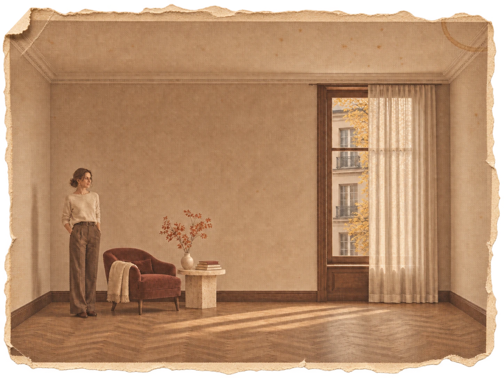
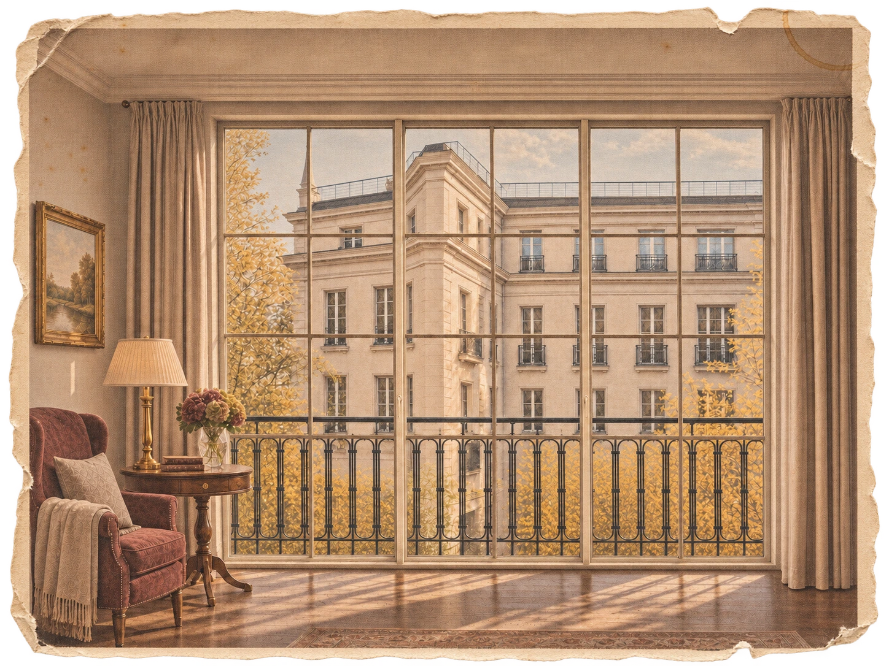
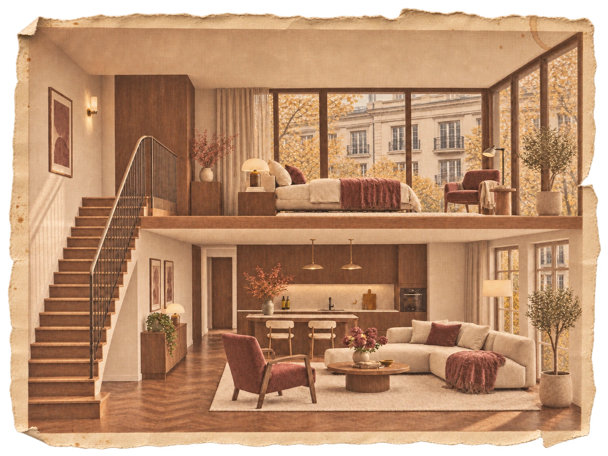
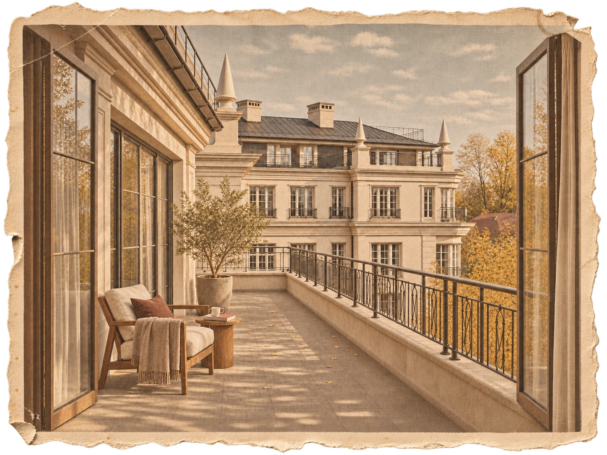
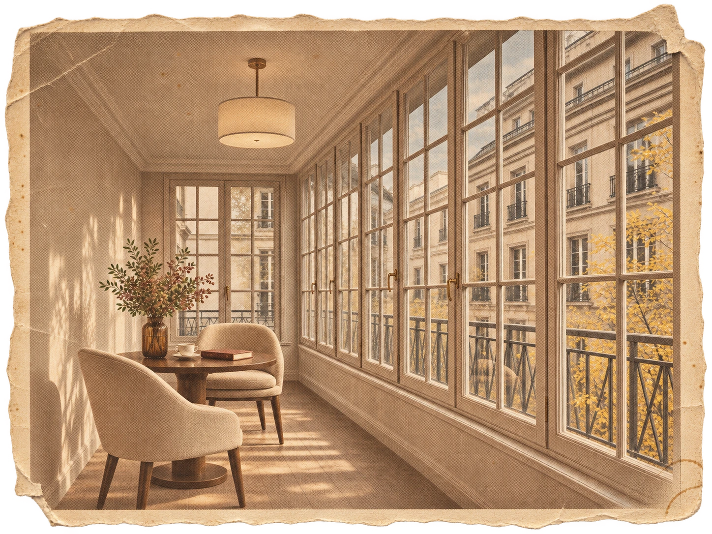
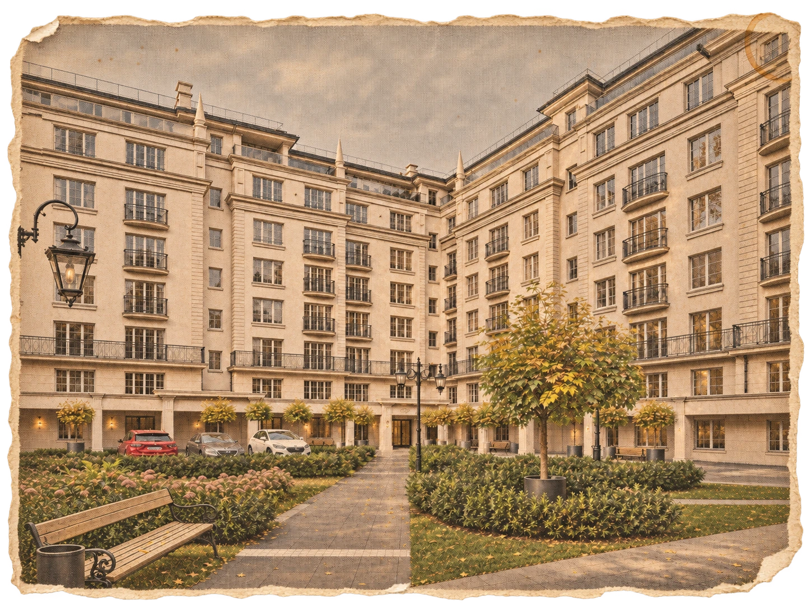
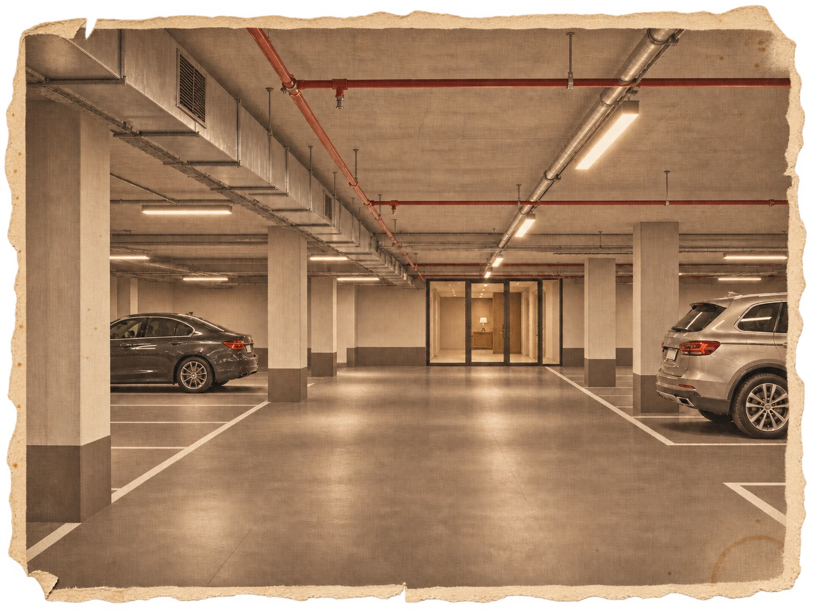
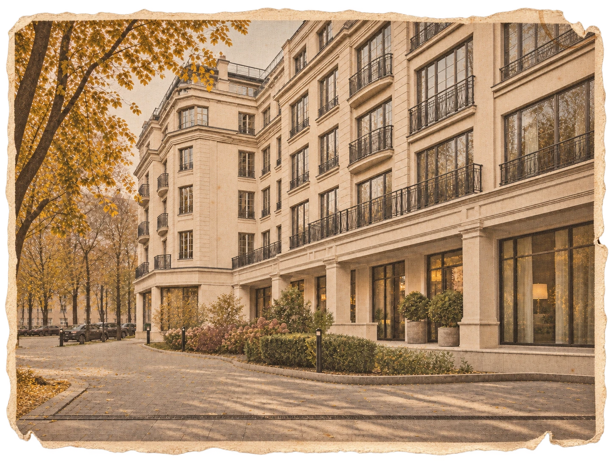
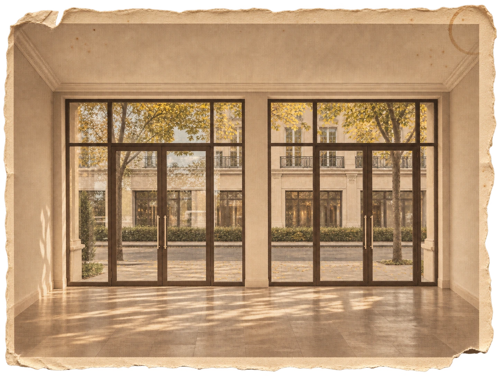

2 комнаты
76,98м²
Двухкомнатная квартира, 76,98 м².
Больше пространства над головой и свободы для интерьера: от высоких шкафов до подвесного света.

Остекление становится частью интерьера. У окна можно расположить обеденную зону, рабочее место или кресло для отдыха.
Широкие окна от пола до потолка наполняют комнату дневным светом. Кресло у окна, книга и тёплый свет настольной лампы — всё, что нужно для тихого вечера дома.
От пола до потолка — во всех квартирах. На обычных этажах это отдельные высокие окна: между ними остаются стены для мебели и любимых картин.
На верхнем уровне двухэтажных квартир остекление становится панорамным — город и небо открываются во всю ширину пространства.

В квартирах на последнем этаже — два уровня, соединённых внутренней лестницей. Общие и личные пространства можно разделить по этажам.
Внизу — общая жизнь и встречи. Наверху — спальня и личное пространство.

У двухуровневых квартир наверху — собственные террасы. Открытое пространство, где можно позавтракать на воздухе, поставить удобное кресло и задержаться с чашкой чая до заката.
Продолжение дома под открытым небом — с местом для ваших маленьких ежедневных привычек.

Застеклённая лоджия — отдельное место для паузы. Свет, любимое кресло и небольшой столик: здесь приятно читать, пить утренний кофе и смотреть, как меняется город.
Остекление закрывает пространство от ветра и дождя, сохраняя открытый вид.

Зелень, дорожки, скамейки и места для детских игр складываются в собственный маленький мир внутри квартала. Можно выйти на прогулку, встретиться с соседями или просто посидеть на воздухе.
Территория закрыта: вход по ключу или карте, камеры наблюдения помогают контролировать происходящее во дворе.

Большой, тёплый и просторный. Машина остаётся под крышей, а возвращение домой не зависит от дождя или снега.
Широкие проезды дают место для манёвра. У автомобиля удобно открыть двери, достать покупки и спокойно собраться в дорогу.

Чернышевского — среди обжитых улиц Центрального района. Здесь есть куда выйти за кофе, где учиться и куда отправиться на вечернюю прогулку.
Привычные маршруты начинаются у дома — от утренних покупок до прогулки в Центральном парке.

Трамвай №5 проходит через остановку «Улица Красная» и идёт к Северному вокзалу и Центральному рынку. Рядом — автобусные маршруты и улицы Красная, Карла Маркса, проспект Мира.
Гимназия №1 — на Чернышевского, 51. Школа №4 — на Карла Маркса, 65. Программы колледжа есть в МФЮА на Ермака, 3 и в филиале РУК на Карла Маркса, 17.
За повседневными покупками — в соседние кварталы: здесь есть продуктовые магазины, пекарни, кафе и аптеки.
Центральный парк и кирха королевы Луизы, зелёные улицы и старые дома — знакомый Калининград за порогом.
Коммерческие помещения на первом этаже — для аренды. Светлые витрины и вход с улицы помогут вашему делу стать частью повседневной жизни района.
Магазин, студия или небольшой офис — подберём помещение под вашу идею и обсудим, что нужно для её запуска.

2 комнаты
Двухкомнатная квартира, 76,98 м².
Укажите, сколько спален вам нужно, какую площадь и бюджет вы рассматриваете. Это поможет сузить выбор до подходящих вариантов.